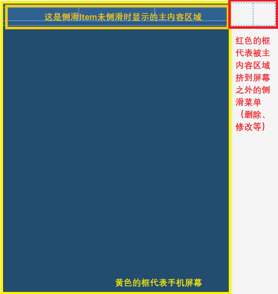
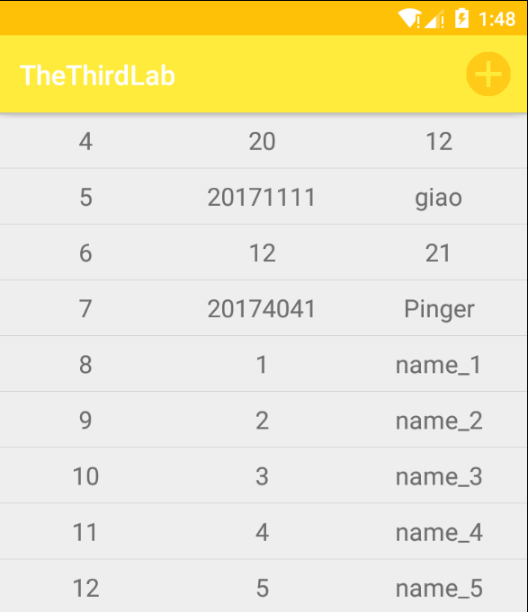
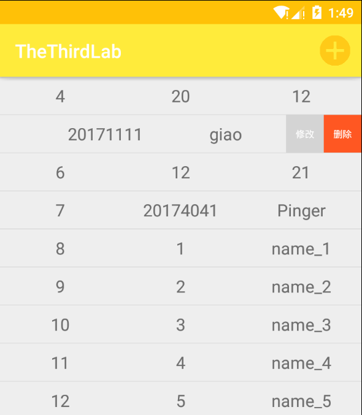

Android自定义layout实现侧滑

文章目录
开发思路
看到如下的图解，主要思路就是要设计一个布局，分为两个部分，一个是左侧的沾满屏幕宽度的显示主内容的橙色框框，一个是被挤到屏幕外看不见的用于侧滑菜单的红色框框。我们需要设计这个布局手指触摸屏幕时的逻辑，这些都体现在自定义布局类内的 onTouchEvent() 方法中。

开发侧滑项的布局
侧滑项使用自定义布局类（下一步就是了=-=），所以此布局的根节点是自定义布局类的全限定名（我的为： com.example.thethirdlab.layout.Sildeslip ），布局设计如下：
1 2 3 4 5 6 7 8 9 10 11 12 13 14 15 16 17 18 19 20 21 22 23 24 25 26 27 28 29 30 31 32 33 34 35 36 37 38 39 40 41 42 43 44 45 46 47 48 49 50 51 52 53 54 55 56 57 58 59 60 61 |
<?xml version="1.0" encoding="utf-8"?>
<com.example.thethirdlab.layout.Sildeslip xmlns:android="http://schemas.android.com/apk/res/android"
android:layout_height="40sp"
android:layout_width="match_parent"
android:orientation="horizontal"
android:contextClickable="true">
<!--主内容-->
<LinearLayout
android:orientation="horizontal"
android:layout_width="match_parent"
android:layout_height="wrap_content"
android:layout_gravity="center">
<TextView
android:id="@+id/id"
android:layout_width="match_parent"
android:layout_height="wrap_content"
android:gravity="center"
android:textSize="18sp"
android:layout_weight="1"/>
<TextView
android:id="@+id/number"
android:layout_width="match_parent"
android:layout_height="wrap_content"
android:gravity="center"
android:textSize="18sp"
android:layout_weight="1"/>
<TextView
android:id="@+id/name"
android:layout_width="match_parent"
android:layout_height="wrap_content"
android:gravity="center"
android:textSize="18sp"
android:layout_weight="1"/>
</LinearLayout>
<!--被隐藏的侧滑内容-->
<LinearLayout
android:layout_width="80sp"
android:layout_height="match_parent"
android:orientation="horizontal">
<TextView
android:id="@+id/update"
android:layout_width="match_parent"
android:layout_height="match_parent"
android:layout_weight="1"
android:gravity="center"
android:text="@string/update"
android:textSize="10sp"
android:textColor="@android:color/white"
android:background="#D4D4D4"/>
<TextView
android:id="@+id/delete"
android:layout_width="match_parent"
android:layout_height="match_parent"
android:layout_weight="1"
android:gravity="center"
android:text="@string/delete"
android:textSize="10sp"
android:textColor="@android:color/white"
android:background="#FF5722"/>
</LinearLayout>
</com.example.thethirdlab.layout.Sildeslip> |
开发自定义布局类
我创建的自定义布局类继承于FrameLayout，位置为：com.example.thethirdlab.layout.Sildeslip，代码如下：
1 2 3 4 5 6 7 8 9 10 11 12 13 14 15 16 17 18 19 20 21 22 23 24 25 26 27 28 29 30 31 32 33 34 35 36 37 38 39 40 41 42 43 44 45 46 47 48 49 50 51 52 53 54 55 56 57 58 59 60 61 62 63 64 65 66 67 68 69 70 71 72 73 74 75 76 77 78 79 80 81 82 83 84 85 86 87 88 89 90 91 92 93 94 95 96 97 98 99 100 101 102 103 104 105 106 107 108 109 110 111 |
/**
* 自定义侧滑视图类
*/
public class Sildeslip extends FrameLayout {
private View menu;
private int menuWidth;
private int menuHeight;
private int contentWidth;
private Scroller scroller;
private float startX;
/**
* 构造器
*/
public Sildeslip(Context context, AttributeSet attrs) {
super(context, attrs);
scroller=new Scroller(context);
}
/**
* 进行一些初始化操作
*/
@Override
protected void onFinishInflate() {
super.onFinishInflate();
//我的侧滑菜单放在视图内的第二个位置
menu = getChildAt(1);
}
/**
* 进行位置测量
* @param widthMeasureSpec
* @param heightMeasureSpec
*/
@Override
protected void onMeasure(int widthMeasureSpec, int heightMeasureSpec) {
super.onMeasure(widthMeasureSpec, heightMeasureSpec);
contentWidth = getMeasuredWidth();
menuWidth = menu.getMeasuredWidth();
menuHeight = menu.getMeasuredHeight();
}
/**
* 设置布局位置
*/
@Override
protected void onLayout(boolean changed, int left, int top, int right, int bottom) {
super.onLayout(changed, left, top, right, bottom);
//将menu挤到右侧不可见
menu.layout(contentWidth, 0, contentWidth + menuWidth, menuHeight);
}
/**
* 绘制布局
*/
@Override
protected void onDraw(Canvas canvas) {
super.onDraw(canvas);
}
/**
* 监听屏幕触摸
*/
@Override
public boolean onTouchEvent(MotionEvent event) {
//获取触摸点在View的位置
final float x = event.getX();
final float y = event.getY();
switch (event.getAction()) {
//此步骤一定要有，因为ACTION_MOVE会多次触发，ACTION_DOWN才能算是真的刚触摸时的位置
case MotionEvent.ACTION_DOWN:
startX = x;
break;
case MotionEvent.ACTION_MOVE:
final float dx = (int) (x - startX);
int disX = (int) (getScrollX() - dx);
if (disX <= 0) {
disX = 0;
}
scrollTo(Math.min(disX, menuWidth), getScrollY());
startX = x;
break;
case MotionEvent.ACTION_UP:
if (getScrollX() < menuWidth / 2) {
closeMenu();
} else {
openMenu();
}
break;
}
return true;
}
@Override
public void computeScroll() {
super.computeScroll();
//当动画执行完成以后，执行新的动画
if (scroller.computeScrollOffset()) {
scrollTo(scroller.getCurrX(), scroller.getCurrY());
invalidate();
}
}
public final void openMenu() {
scroller.startScroll(getScrollX(), getScrollY(), menuWidth - getScrollX(), 0);
invalidate();
}
public final void closeMenu() {
scroller.startScroll(getScrollX(), getScrollY(), 0 - getScrollX(), 0);
invalidate();
}
} |
将自定义侧滑布局转载到ListView
我这里使用简单适配器将前面创建的自定义侧滑项连同数据装载到一个ListView中，主要参考代码如下：
1 2 3 4 5 6 7 8 |
//找到ListView
listView =findViewById(R.id.listView);
//准备数据源
users = dbService.queryAllWithList();
//创建数组适配器
simpleAdapter= new SimpleAdapter(this, users, R.layout.sideslip, new String[]{"uid", "name", "number"}, new int[]{R.id.id, R.id.name, R.id.number});
//ListView绑定适配器
listView.setAdapter(simpleAdapter); |
显示的效果如下：

侧滑一个item，显示效果如下：

设置侧滑菜单项的点击监听
通过前面的演示图可以看到，已经实现了侧滑出现删除和修改菜单项了，但是怎么设置它们的点击监听呢？是在自定义布局类中的某个方法中（比如初始化方法）找到这两个菜单项来设置布局吗？如果是这样未免太繁琐和不优雅了。我的思路是通过ListView来设置每一个Iten的侧滑菜单的点击，利用ListView的 getChildAt() 方法可以定位每一个侧滑Item，然后再通过这个Item找到菜单项，为其设置点击监听。此处还有一个问题就是，ListView的适配器是异步加载的，所以需要在ListView下创建一个子线程，在这个子线程中设置监听。我的参考代码如下：
1 2 3 4 5 6 7 8 9 10 11 12 13 14 15 16 17 18 19 20 21 22 23 24 25 26 27 28 29 30 31 32 |
//适配器是异步加载的，所以需要在ListView的子线程设置监听
listView.post(new Runnable(){
public void run(){
for(int i=0;i<listView.getChildCount();i++){
View view = listView.getChildAt(i);
//获取当前项的id
final String idStr = ((TextView) view.findViewById(R.id.id)).getText().toString();
//获取菜单按钮
View update = view.findViewById(R.id.update);
View delete = view.findViewById(R.id.delete);
final int finalI = i;
update.setOnClickListener(new View.OnClickListener() {
//主内容
@Override
public void onClick(View view) {
//弹出对话框
showDialog(false,Integer.valueOf(idStr),finalI);
}
});
delete.setOnClickListener(new View.OnClickListener() {
@Override
public void onClick(View view) {
//调用业务逻辑层
dbService.deleteById(Integer.valueOf(idStr));
//更新视图
users.remove(finalI);
simpleAdapter.notifyDataSetChanged();
}
});
}
}
}); |
文章作者 Pinger
上次更新 2019-12-04